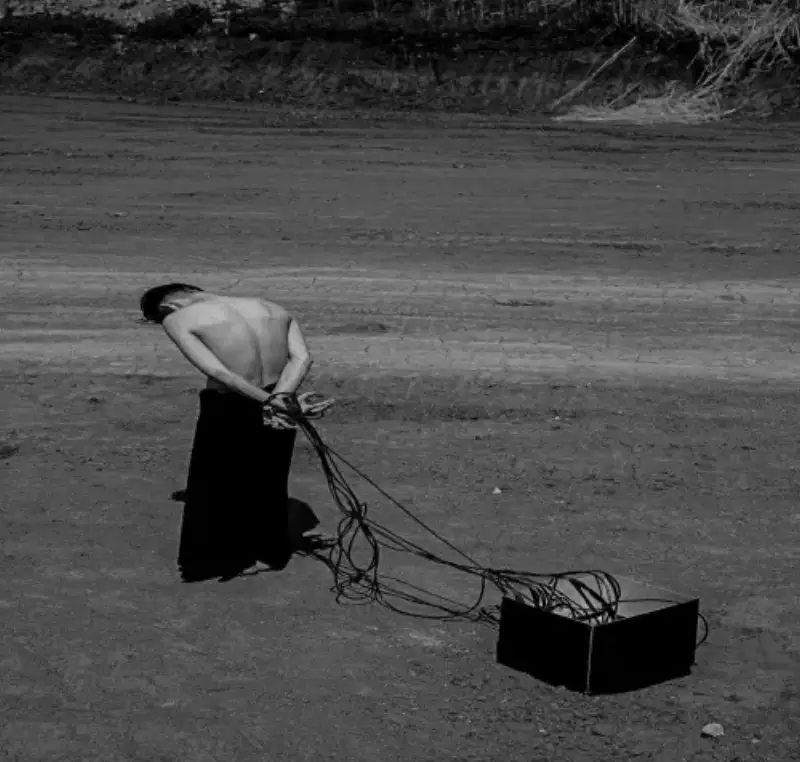

A striking black-and-white image hangs in a New York gallery:center. A bare-chested young man is caught in a huge net of cables, his twisted body hanging toward a black box that stands for the root of bondage. This work, titled Healing, is not only the center of the Chinese artist Zhang Pei's Healing series. It is also a summary of how she uses her camera as a scalpel to cut into the spiritual distress of modern society. In recent years, Zhang Pei, with her deep human care and unique visual story, has won international honors such as the Silver Award at the New York Photography Awards and an excellent-work award at the Kyoto Horizon International Art Exhibition in Japan. Her conceptual photography is now drawing strong echoes from the global art world.

Rooted in reality: the street is society, and the lens is conscience
Zhang Pei's work is always anchored in the changing soil of Chinese society. As the Shanghai Modern and Contemporary Art Exhibition put it, she is a conceptual photography curator who turns away from glamour and points her camera firmly at the corners hidden by noise. A street is a microcosm of society, Zhang Pei states in a journal of the French International Association of Designers and Artists. She walks deep into ordinary lanes such as Fu'an Road in Shanghai. From the angle of human nature and conscience, she combines random shots with record-based framing, to weave a long visual scroll that cuts through society.
Her visual language is honest and many-sided. When the Italian Art Factory gave her its Art Ambassador Award, it said: every side of human nature and of modern society is Zhang Pei's favorite subject. She catches real life and real moments, and whether they are positive or negative, they are skilfully held in an instant that lasts. The curator Salvo Nugnes added that her work leads viewers to think deeply about the problems we face now. On one side, she catches the warmth and kindness in streets and lanes, and shows their beauty. On the other side, she does not avoid the distorted traits of her time, such as restlessness, empty display, vanity, showing off wealth, posing, and shallowness, as the Shanghai exhibition noted. This even two-sided view lifts her images beyond simple record. They become a rare and irreplaceable historical record of the people and events in China today, as the French journal wrote. Their core aim is to warn people and society.
Visual metaphor and healing: a map of the spirit beyond appearances
Zhang Pei's power lies not only in the truth of record, but in her ability to raise social observation into a map of the spirit that means something universal. Healing is the peak of that power. A deep report from the New York photo show revealed its striking visual code. The bare back and lowered head of the young man are a wordless cry of fragility and loneliness. The tangled cables stand for the suffocating bondage and pressure of modern society. The gathered pure black box is a metaphor for the root of bondage and the complex, often unbearable relation between the individual and the outside world. Through a minimal frame and refined light, the vast, barren background and the bold black-and-white tone endlessly enlarge this unspeakable exhaustion, despair, and sense of being abandoned.
This strong dramatic tension and story is the mark of Zhang Pei's conceptual photography. She turns abstract social pressure and spiritual distress into symbols you can feel, and hits the viewer's heart. As a New York review put it, her work explores the deep troubles and struggles of young people today through visual story, and it carries the power of awakening and healing. It forces viewers to look at their own state, and to see their own shadow in the twisted figure. It leads them to reflect, to find echoes in their own experience, and at last to think about how to break free and live a freer, fuller life. Her lens is thus a wake-up dose, and a bridge to self-healing.
International echo: a global response to a Chinese view
Zhang Pei's deep local observation and her highly tense art language quickly won wide praise and high recognition from the international art world. The human distress and the symptoms of the age revealed in her work echo across cultures.
Recognition in New York: She won the Silver Award at the 2024 New York Photography Awards, which confirms the artistic value of her work by a leading North American art award. The deep reading of Healing at the New York show shows the strong attention and deep thought her work draws at a professional level.
Acclaim in Japan: Her work was selected for the 2024 Kyoto Horizon International Art Exhibition in Japan and named an excellent work. The organizers said her work explores the boundary between reality and transcendence through varied art forms, and shows a deep understanding of modern environment and social issues. They added that it brought a fresh international view and experience to the show. This fully confirms the international reach and novelty of her art language.
Honor in Italy: She received the Art Factory Art Ambassador Award in Italy, given by a senior jury that included the noted scholar Francesco Alberoni, the critic Vittorio Sgarbi, and the curator Salvo Nugnes. This confirms the European art world's admiration for the depth of her human care.
Roots in Hong Kong and Shanghai: She was selected for the artists' joint exhibition at the 2024 second Hong Kong International Cultural and Creative Expo, and at home she won the 2023 Master of Photography Award at the Visual Crossing - Shanghai Modern and Contemporary Art Exhibition. This shows solid recognition of her work across the mainland, Hong Kong, Taiwan, and the core platforms at home.
This weighty list of awards is not only a milestone in Zhang Pei's own career. It also shows that Chinese contemporary conceptual photography, with its unique view and strong expression, is marking an undeniable place on the world art map.
Images as a monument: marking the age, waking healing
From Instant, the changing world on Shanghai streets, to Healing, which freezes human spiritual distress in a New York gallery, Zhang Pei's lens keeps its mission: to record honestly from the angle of human nature and conscience. Her conceptual photography is a sharp slice of society that reveals the complex texture under the glossy surface. It is a deep visual fable that weaves the unseen pressure of the age into a striking net of images. It is also a series of warning questions, pushing viewers to look back at themselves and the world they live in.

The praise of the Kyoto Horizon exhibition, exploring the boundary between reality and transcendence, sums up the core of Zhang Pei's art. She is rooted in the truest soil of reality, yet gives it transcendent power and universal meaning through her lens. In an age of exploding information and anxious feeling, her work is a cold, clear mirror that shows the collective face and the inner folds of our time. When the international art world honors this Chinese image thinker again and again, we see more than personal success. We see the global respect earned by a path that uses visual conscience to enter society, and uses art to seek healing. With deep insight and uncompromising truth, Zhang Pei's images are becoming a unique monument to the spiritual journey of our time.